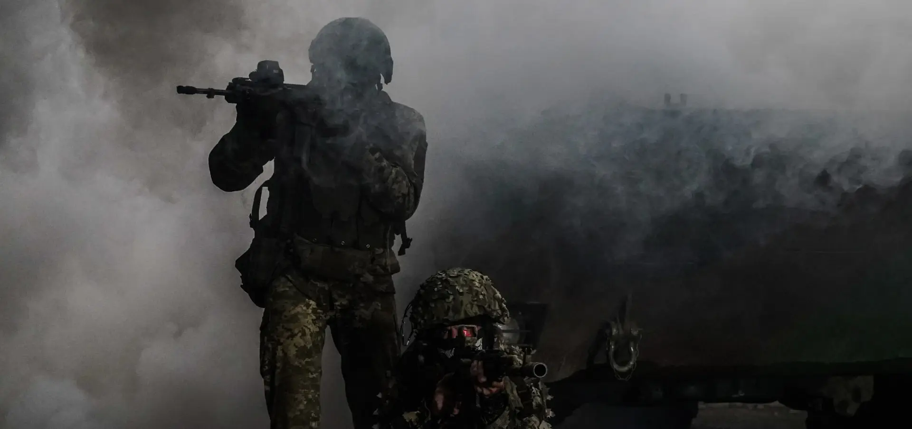
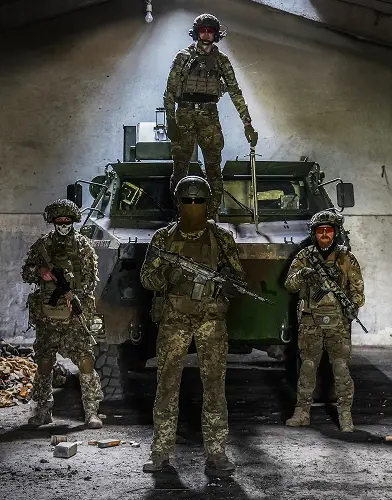
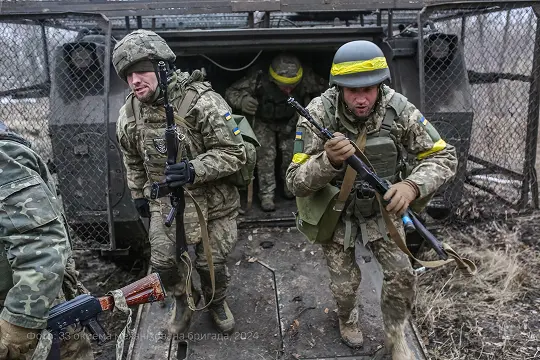

- Досвідчене командування
- Чіткі напрямки підготовки
- Бойове братерство
Оперативне Командування Південь захищаємо південні рубежі України
Долучайся без страху!
Оперативне Командування Південь — це рольовий проєкт, побудований на дисципліні, взаємній довірі та чіткій структурі підпорядкування.
Command тримає під контролем південний напрямок і координує дії підрозділів, що стоять на захисті рубежів.

Бійці ОК «Південь» — не випадкові люди, а спільнота, де кожен знає своє місце та завдання. Тут цінують дисципліну, взаємовиручку та вірність побратимам.
Приєднуйся, проходь підготовку та стань частиною історії південного напрямку.
Подати заявкуЗона відповідальності
Етапи підготовки
Кожен, хто долучається до Оперативного Командування Південь, проходить послідовну підготовку. Це гарантує, що в підрозділах опиняються бійці, готові діяти злагоджено та впевнено.
-
Фаза 1 Курс Молодого Бійця (КМБ)
Базовий етап підготовки: стройова, статути, дисципліна та фізична витривалість. КМБ формує фундамент, без якого неможливе подальше навчання — саме тут перевіряється готовність новачка йти далі.
-
Фаза 2 Вогнева підготовка
Опанування стрілецької зброї, тактика ведення вогню та злагоджена робота у складі групи. Боєць вчиться діяти впевнено у стресових умовах, наближених до бойових.
-
Фаза 3 Бойове злагодження та Присяга
Фінальний етап: відпрацювання дій у складі підрозділу, командна взаємодія та завершення підготовки Присягою. Після цього боєць офіційно стає частиною Оперативного Командування Південь.

Наші підрозділи
Познайомся з підрозділами Оперативного Командування Південь та їхніми функціями. Кожен підрозділ виконує ключові завдання в обороні південних рубежів.